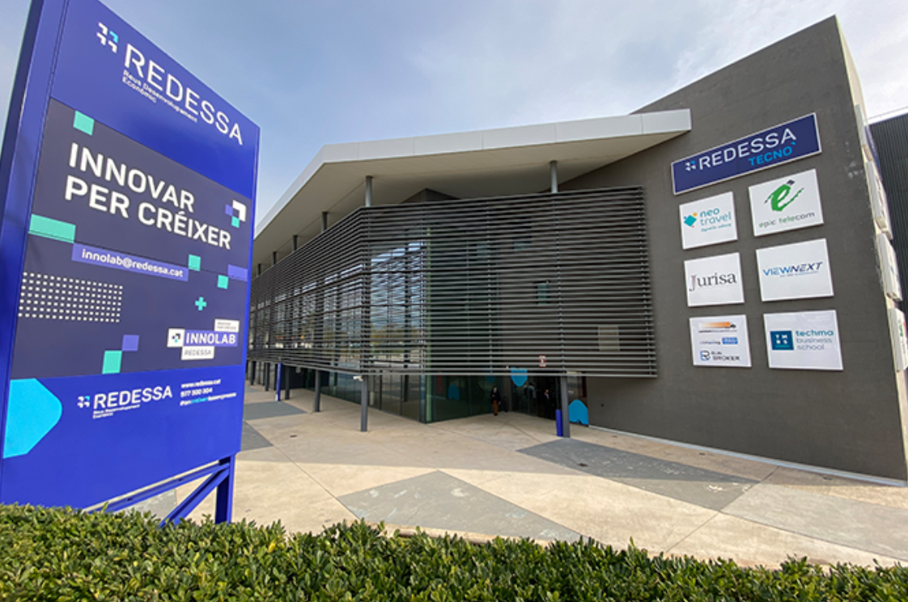

CASE #00 · IT SYSTEMS00 / FP DUAL
Administración de sistemas y redes corporativas
Un año de experiencia real montando servidores, gestionando switches Cisco, segmentando con VLANs y administrando flotas móviles con Samsung Knox.
REDESSA · 2024/25